【情報】RO樂園 工具網站：配裝模擬器、技能樹、經驗試算、每日任務、期間活動、攻速計算、韓服資料（圖文介紹）
🔗 網站：https://roz-exp.lukatw.workers.dev
這是我做的 RO樂園 工具網站，一開始只有經驗試算和每日任務，越做越多，乾脆重新整理一篇給大家參考～
✔ 免費、免登入、不用下載
✔ 電腦、手機都能用
✔ 資料只存在你自己的瀏覽器，不會上傳
✔ 預設是仿遊戲視窗的「遊戲版面」，右上角可以切回「一般版面」
📑 目錄
一、🧩 配裝模擬器
二、🌳 技能樹
三、⚡ 經驗試算
四、📋 每日任務待辦清單
五、🎃 期間活動待辦清單
六、⚔️ 攻速計算
七、🇰🇷 韓服資料整理
八、📐 傷害公式整理
九、小技巧＆問題回報
一、🧩 配裝模擬器
👉 https://roz-exp.lukatw.workers.dev/gear
📖 使用說明：https://roz-exp.lukatw.workers.dev/gear-guide
選好職業、穿上裝備，所有能力自動加總。
目前收錄約 470 件裝備、58 組套裝、388 張卡片，數值依遊戲內說明逐件核對。
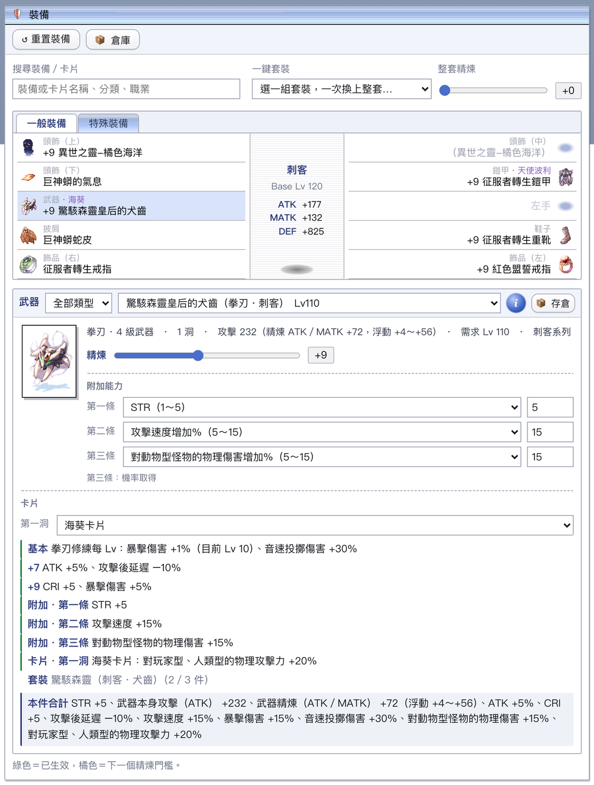
裝備視窗跟遊戲一樣
- 格子位置和遊戲的裝備視窗相同，點一下格子就在下方設定
- 精煉用拉霸調整，每個精煉門檻的效果都會標出「已生效」或「下一個門檻」
- 附魔、附加能力、卡片都能設定，套裝、套卡自動判斷
- 搜尋欄打名稱，點一下就直接穿上裝備或插卡
- 一鍵套裝、整套精煉
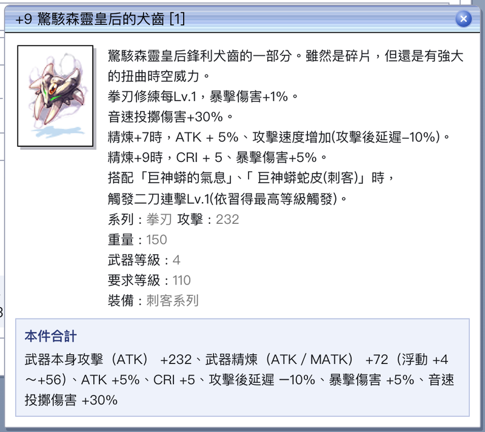
按右鍵看物品資訊
對裝備按右鍵（手機按藍色 i）會跳出物品資訊：物品大圖、遊戲內說明原文，還有這件裝備目前的附魔、卡片和「本件合計」。
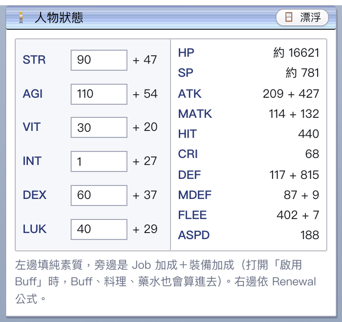
人物狀態（仿 Alt+A）
- 左邊填純素質，自動加上 Job 加成和裝備加成
- HP、SP、ATK、MATK、HIT、CRI、DEF、MDEF、FLEE、ASPD 依 Renewal 公式計算
- 可以「漂浮」在畫面上，一邊換裝一邊看數值變化；手機版會從右邊滑出來
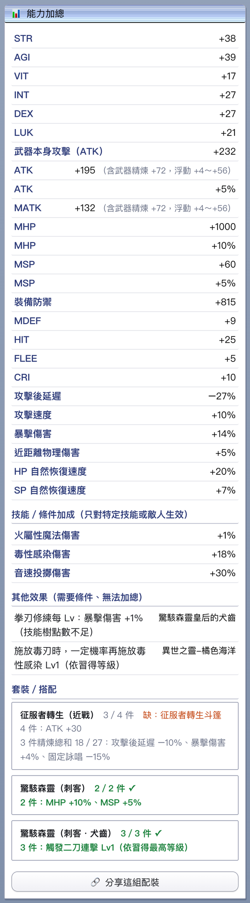
能力加總
所有裝備、精煉、套裝、附魔、卡片、符文和 Buff 都加好了。
「只對特定技能或敵人生效」的加成會另外列，套裝還缺哪幾件也會寫出來。
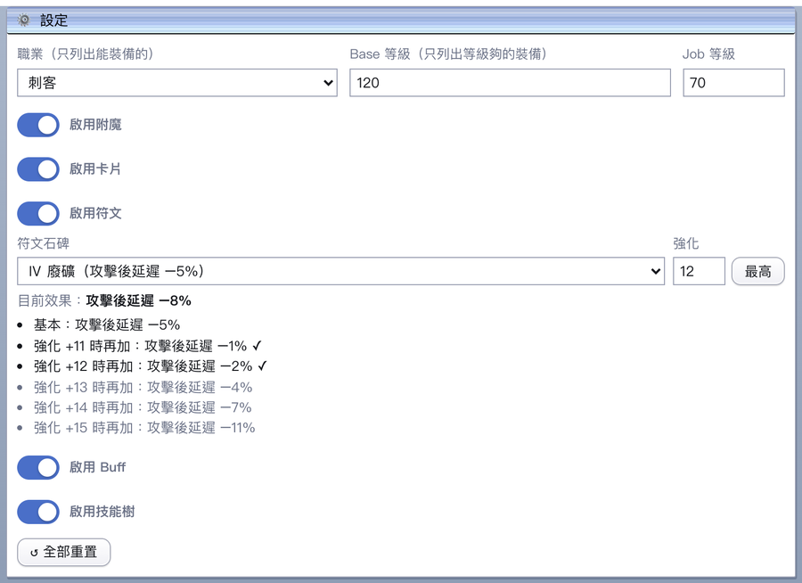
需要再開的進階功能
設定區可以分別開關：
- 附魔、卡片
- 符文石碑：32 組，填強化等級自動累加
- Buff：天地樹、料理、藥水（攻速藥水、挑戰藥水、極限藥水⋯）、隊友技能（祭司、鐵匠／商人、賢者、詩人／舞孃）、自己職業的技能
- 技能樹：「習得某技能時」「某技能每 Lv」的效果照技能點計算
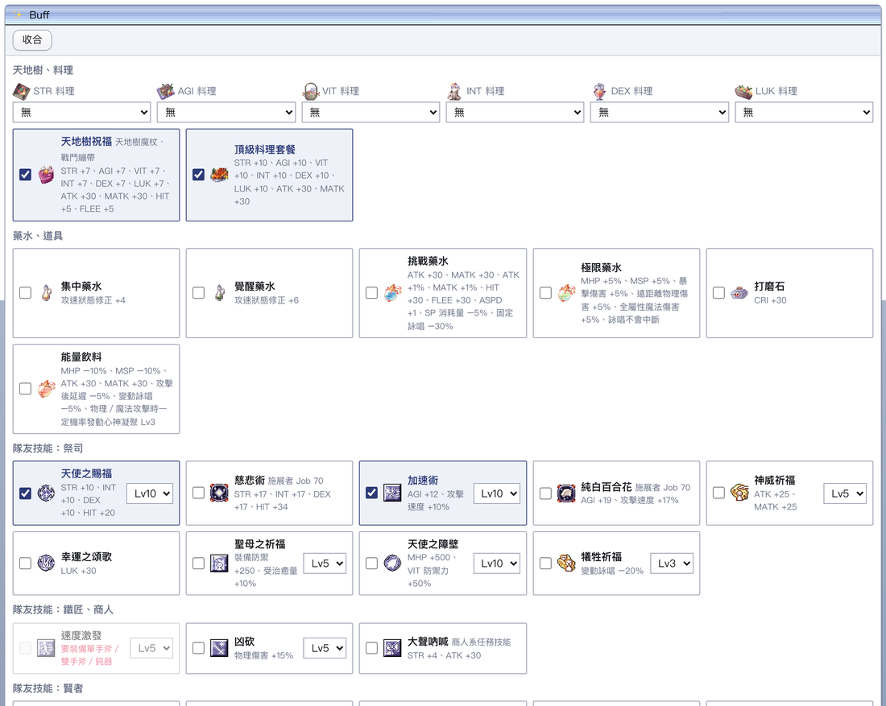
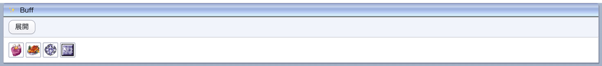
Buff 區收起來之後，會顯示一排目前生效的 Buff 圖示，滑鼠移上去看說明。
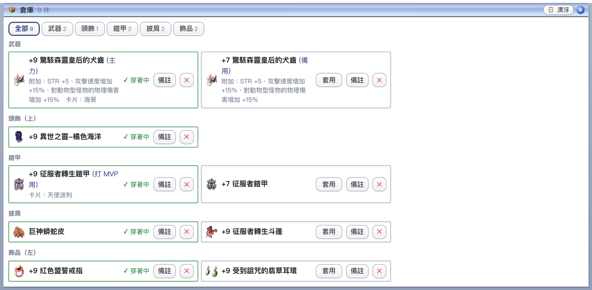
倉庫：存下設定好的裝備
- 每個部位按「📦 存倉」，連同精煉、附魔、附加能力、卡片整件存起來
- 倉庫依部位分類，按「套用」就穿回去，還能加備註（例如：打 MVP 用）
- 所有角色共用，可以漂浮在畫面上，也可以固定在頁面裡
其他
- 特殊裝備：服飾附魔石、典藏板、寵物戒指、幸運髮飾
- 多角色：每個角色各存一份配裝，可以複製角色、拖曳排序
- 分享：一鍵產生短網址，朋友打開就能看到你的配裝
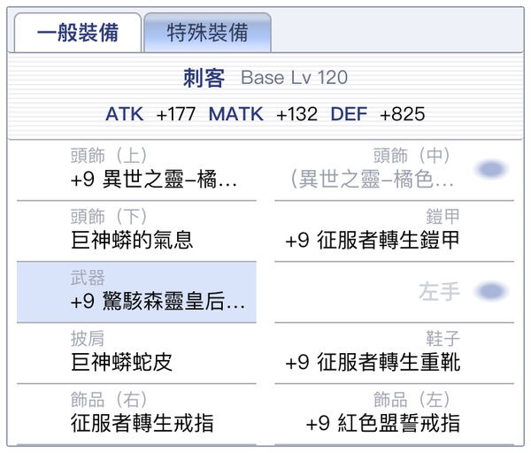
（手機版畫面）
二、🌳 技能樹
👉 https://roz-exp.lukatw.workers.dev/skill
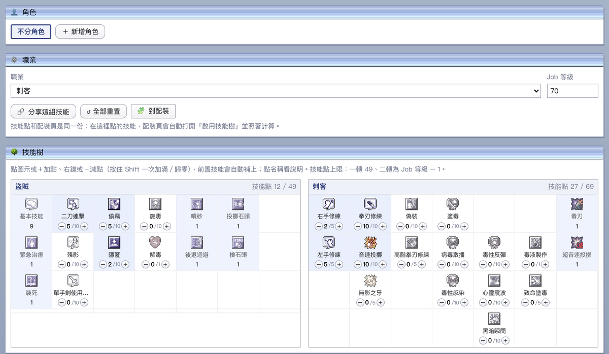
- 一轉、二轉分頁，跟遊戲的技能視窗一樣
- 點圖示加點、右鍵減點，按住 Shift 一次加滿；前置技能自動補上
- 點技能名稱看說明；技能點上限：一轉 49、二轉 Job 等級 − 1
- 和配裝模擬器是同一份資料，配裝會照這裡的技能點計算
- 可以產生分享連結
三、⚡ 經驗試算
👉 https://roz-exp.lukatw.workers.dev/
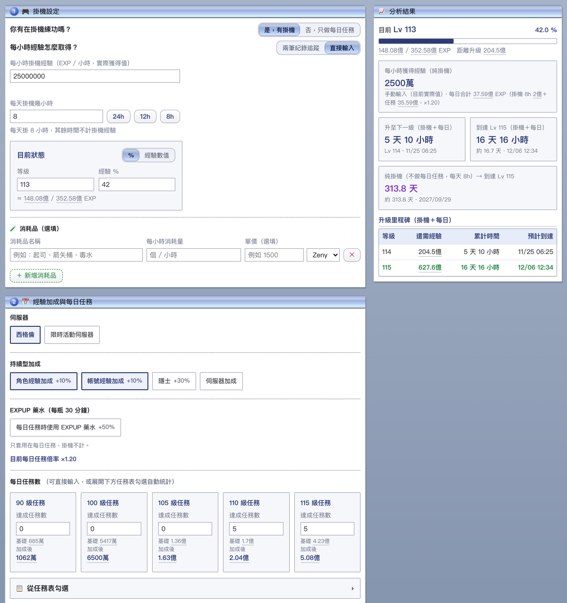
算出到目標等級還要多久、哪一天會到。
- 掛機經驗可以用「兩筆紀錄追蹤」自動推算，或直接輸入每小時經驗
- 每日任務 90～115 級，填完成數量，或展開任務表直接勾選
- 主線任務（斐揚～汶巴拉）勾了就直接扣掉
- 角色／帳號經驗加成、隱士、伺服器加成、EXPUP 藥水、限時活動伺服器都能算
- 消耗品成本（Zeny 或台幣）
- 升級里程碑表、預計到達時間
四、📋 每日任務待辦清單
👉 https://roz-exp.lukatw.workers.dev/daily
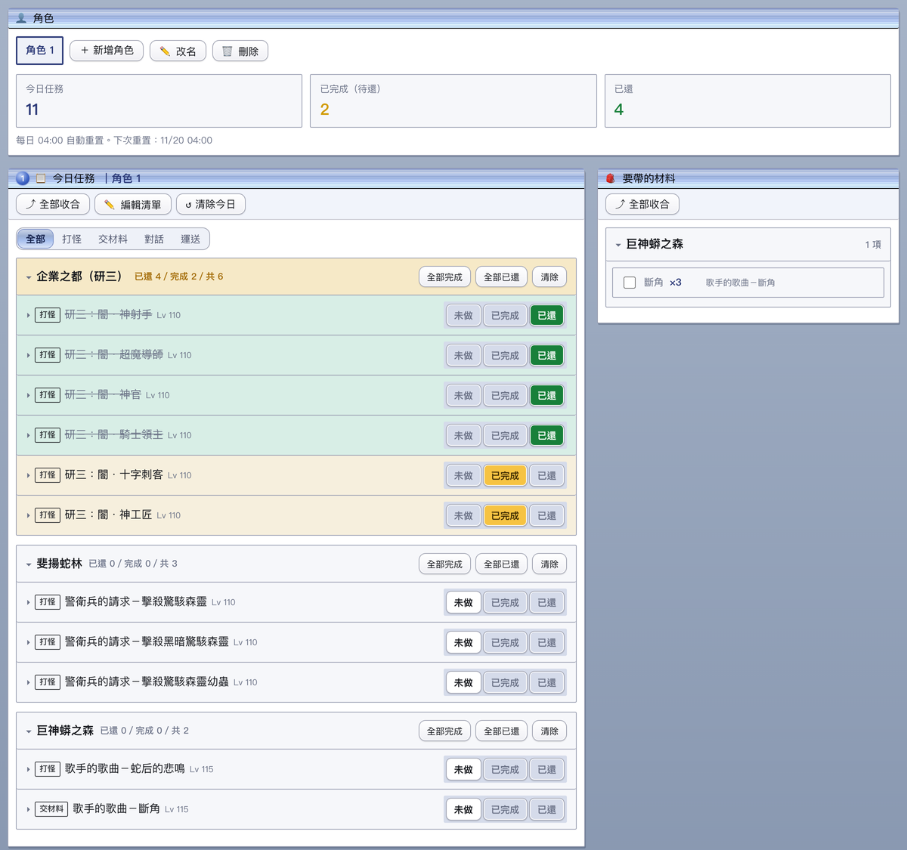
- 90～115 級共 17 個區域、104 個每日任務
- 支援多角色，每個角色勾選自己要解的任務，還能拖曳調整順序
- 每個任務分「未做／已完成／已還」，每天 04:00 自動重置
- 展開可以看 NPC 座標（/navi 一鍵複製）、所需材料、前置任務、獎勵
- 🗺️ 路線指引、🎒 要帶的材料會自動整理好
（任務資料參考 RO補給站）
五、🎃 期間活動待辦清單
👉 https://roz-exp.lukatw.workers.dev/events
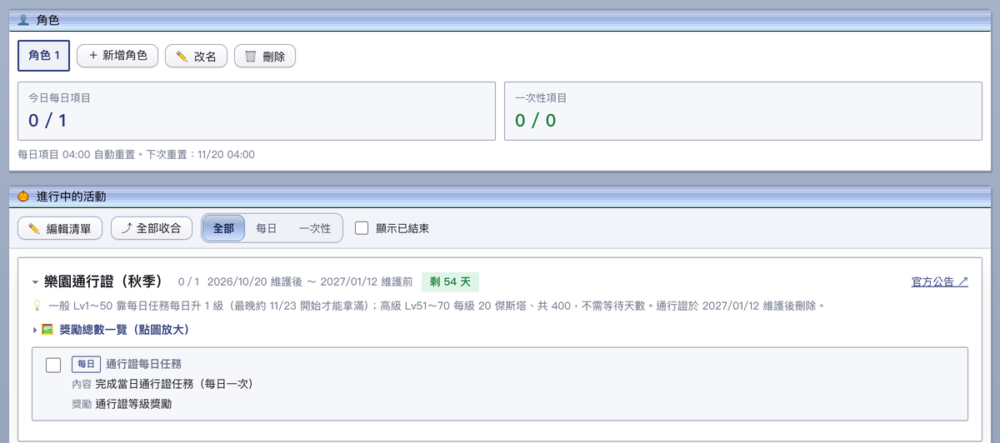
- 官方期間活動整理成清單，分「每日」和「一次性」項目
- 顯示活動期間和剩餘天數，附官方公告連結
- 和每日任務共用同一份角色
六、⚔️ 攻速計算
👉 https://roz-exp.lukatw.workers.dev/aspd
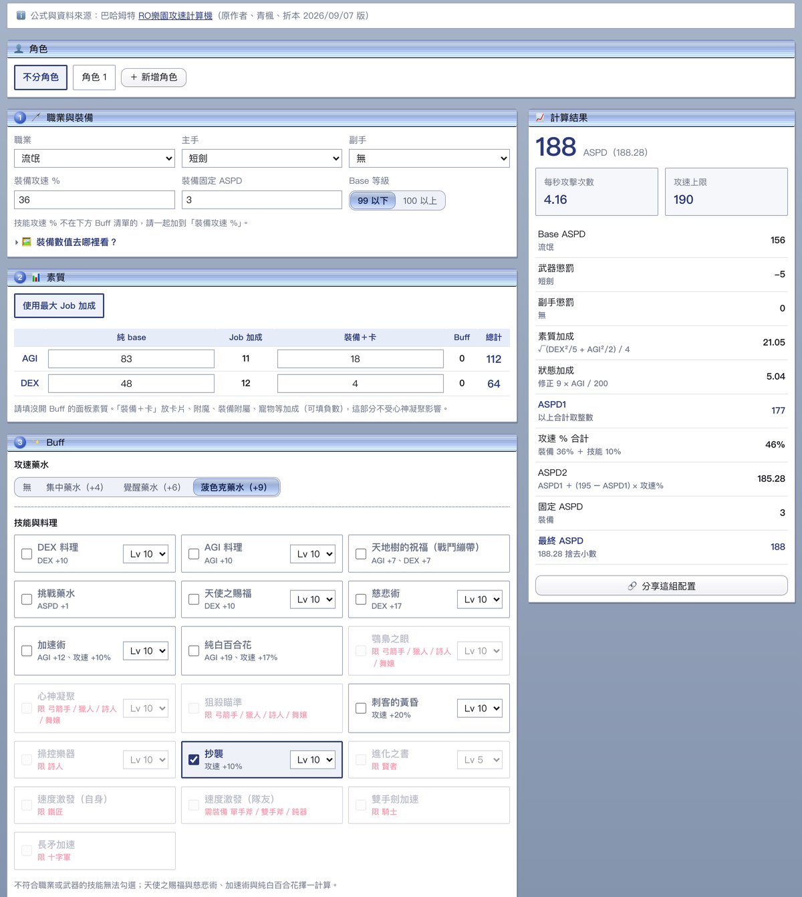
參考巴哈「RO樂園攻速計算機」（原作者：青楓）的公式製作。
- 選職業、主手／副手武器，填素質和裝備攻速
- 攻速藥水、天使之賜福、加速術、刺客的黃昏等 Buff 直接勾選，不符合職業或武器的會自動鎖住
- 顯示最終 ASPD、每秒攻擊次數，以及每一步的計算明細
- 上限：Base 99 以下 190、100 以上 191
- 可以產生分享連結
七、🇰🇷 韓服資料整理
👉 https://roz-exp.lukatw.workers.dev/kr
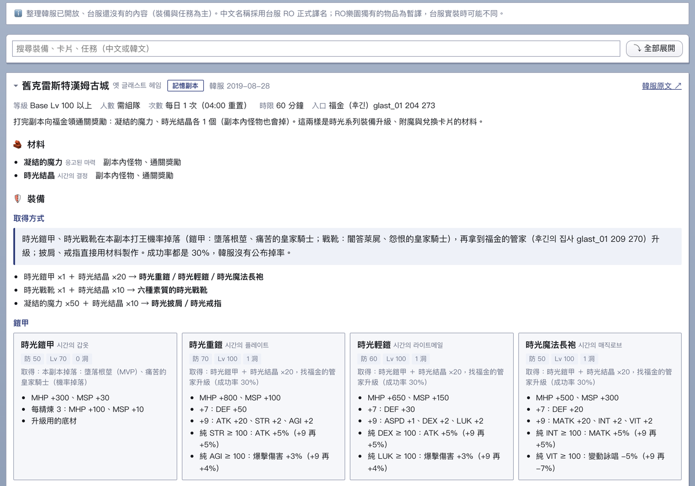
- 整理韓服已開放、台服還沒有的副本、任務和裝備（目前 39 篇）
- 材料、裝備、卡片、附魔表都有，附韓服原文連結
- 可以用中文或韓文搜尋
- 台服開放後會標示出來，並附台韓差異對照
八、📐 傷害公式整理
👉 https://roz-exp.lukatw.workers.dev/formula
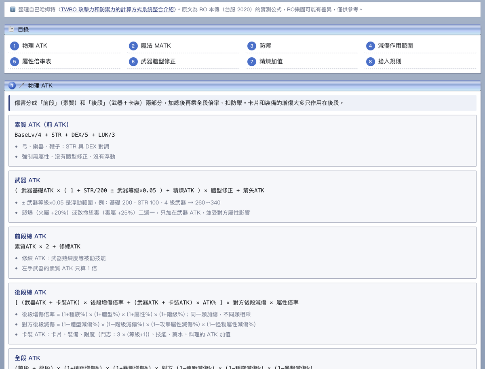
物理／魔法傷害、防禦、屬性倍率表、武器體型修正、精煉加值等公式，以及減傷卡片清單。
（整理自 TWRO 實測，樂園可能有差異，僅供參考）
九、小技巧＆問題回報
- 右上角「🖥️ 一般版面／🎮 遊戲版面」可以切換介面風格，🌙 切換夜間模式
- 資料存在自己的瀏覽器裡，換手機或清除瀏覽器資料就會不見
- 每日任務、期間活動、攻速計算共用一份角色；配裝、技能樹是另一份
- 數值有錯或缺資料：按頁面下方的「🐞 回報問題」，或 DC 私訊 zhuge0520
🏯 凌雲閣收人，歡迎 DC 私訊 zhuge0520
之後的更新會在下面的樓層補上，有建議歡迎留言～